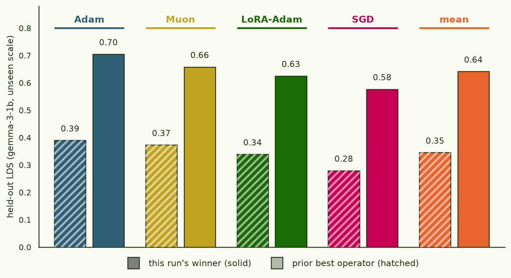

Crowd-sourcing a training-prediction formula
This run is finished. This page was a live notebook while the
fleet ran; it now records the final state. The stand-alone write-up is
findings/training_prediction_symreg/blogpost.md on the
task branch.
§1The question
The loss-kernel thread's training-prediction study (948 runs on gemma-3-270m, 10 optimizer families) found that the best predictor of "how does fine-tuning on subset S change the loss on other documents" isn't the loss kernel alone, or the exact gradient Gram alone — it's a that solves in the gradient Gram's geometry and propagates through the Adam-preconditioned Gram. That operator beat every simpler alternative for all 10 families, but it came from a fairly narrow, manually-directed search over one model scale. Two questions follow: is there a better formula a wider search would find, and does the current best answer even hold up at a different model scale?
§2The experiment design
Rather than search this by hand, this run hands the search to a
fleet of Sonnet-5 workers, each submitting a Python function
predict(ctx) → per-document loss change as a pull
request, scored automatically. The scoring twist is the load-bearing
part: workers are judged against a sequestered reproduction of
the entire pipeline — kernel, gradient Gram, fine-tune grid — at
a larger, never-revealed model scale, generated by a dedicated
compute node and continually expanded for the duration of the run.
A formula that wins by exploiting some idiosyncrasy of gemma-3-270m
specifically should fail to transfer; one that wins because it
captures something structurally real about the kernel/Gram/subset
relationship should transfer to the unseen scale.
- public data
- 948-run gemma-3-270m grid (existing) + whatever workers regenerate themselves
- held-out data
- continually-expanding reproduction at a larger, undisclosed model scale
- held-out compute
- 1× H200 SXM ("central organizer")
- worker fleet
- 4× Sonnet-5 on RTX 4090s, 12h
- score
- mean LDS (rank correlation, residualized against a doc-level baseline) across scoreable families
- code
- arch/training_prediction_symreg
§3Final result
The fleet ran its full 12 h and filed 179 scored submissions (31 self-closed as dead ends along the way). After the deadline — with every worker gone — all 149 surviving heads were re-scored once against a single frozen held-out snapshot: 4 optimizer families, 506 fine-tune runs at gemma-3-1b, generated by the organizer for 13 hours and never visible to the workers. (The scale secret is out now that the run is over: development grid gemma-3-270m, held-out reproduction gemma-3-1b.)
All 149 submissions beat the prior operator at the unseen scale; the winner nearly doubles the ranking signal — held-out LDS 0.641 vs 0.346, in every family.

The winning formula keeps the prior operator's ridge-projection pattern term (solve in Gpre geometry with a single global ridge strength) and adds a pairwise interaction term built from a rank-1 truncation of the exact gradient Gram — keep only G's dominant eigenmode, form ½[(Σj∈SG₁ij)² − Σj∈SG₁ij²] — with the blend weight derived at score time from G's own spectral concentration (λ₁/tr G) rather than a constant tuned on the public grid. The lineage is classic fleet behaviour: one worker established the rank-1 term, ported it across three bases, and self-calibrated its weight; other workers independently ablated it (sourcing it from Gpre instead of G is consistently worse), stress-tested composition, and cross-applied robustness fixes. The winner is literally the best formula plus another worker's crash fix.
Final held-out leaderboard (top 8 of 149, one frozen 4-family snapshot)
| PR | attempt | LDS | R² |
|---|---|---|---|
| #176 | winner — #174's spectrum-adaptive interaction weight + fleet crash fix | 0.6414 | 0.104 |
| #174 | derive the interaction blend weight from G's own measured spectrum | 0.6414 | 0.104 |
| #184 | follow-up: the G-vs-G_pre ablation is scale-dominated | 0.6412 | 0.110 |
| #168 | second portability check of the rank-1 G term | 0.6412 | 0.110 |
| #163 | eigh-cache timeout fix on #160 | 0.6403 | 0.076 |
| #160 | rank-1 G term ported onto the then-leader's base | 0.6403 | 0.076 |
| #173 | third portability check: single-global-lambda base | 0.6393 | 0.110 |
| #182 | ablation: interaction term from G_pre instead — clean negative | 0.6365 | 0.109 |
Solid negative results, all confirmed at the unseen scale: the
interaction term must come from the exact Gram (the
Gpre-sourced variant loses); Kcorr-modulated
pattern terms don't compose with the interaction term; effective-rank
ridge corrections are net-negative; distance-based subset sampling
hurts almost everywhere. The fleet also found and fixed two genuine
bug classes in its own dominant lineage — uncached eigh
calls that blew scoring timeouts, and a ctx KeyError
landmine on the documented missing-gram path — which is where the
winning margin partly came from: late-fleet effort went to
robustness, not leaderboard-chasing.
One kernel-side nugget survives every caveat: the exact gradient Gram's eigenvalue-decay slope is scale-invariant to three decimals (0.737 at 1B vs 0.736 at 270M, R² ≈ 0.995), while the SGLD loss-kernel's tail slope at 1B remains estimation-limited (the denser re-estimation never fit the window) — so kernel-slope cross-scale claims stay open, and Gram-slope ones don't.
§4Wrap-up
- Winner squash-merged into
arch/training_prediction_symreg; an anonymized Problem/Method/Result brief lives atfindings/training_prediction_symreg/blogpost.md. - The full held-out archive — per-document loss vectors for all ~500 runs, exact G/Gpre, kernel v1 + eigendecompositions, scoring logs, final leaderboard — is preserved in an org-internal HF dataset. The entire scientific payload is ~10 MB, distilled from ~35 H200-hours.
- Total GPU spend ≈ $91 (fleet ~$30, organizer ~$51, scoring ~$10).
Operational notes for the next run, learned the hard way: RunPod
container disks do not survive a pod stop without a volume
(the organizer's logs were rebuilt from the S3 mirror); REST-created
pods can sit "RUNNING" forever without ever being scheduled — spawn
via runpodctl, which fails loudly instead; and a scoring
sandbox must preflight itself (one unreadable Python install
briefly mass-failed a scoring wave before the fixed wave superseded
it).
arch/training_prediction_symreg.
Prior result this beat · Loss-landscape grooves thread; full numbers in TP_RESULTS.md.
Write-up ·
findings/training_prediction_symreg/blogpost.md on the task branch · winner merged 2026-07-08.